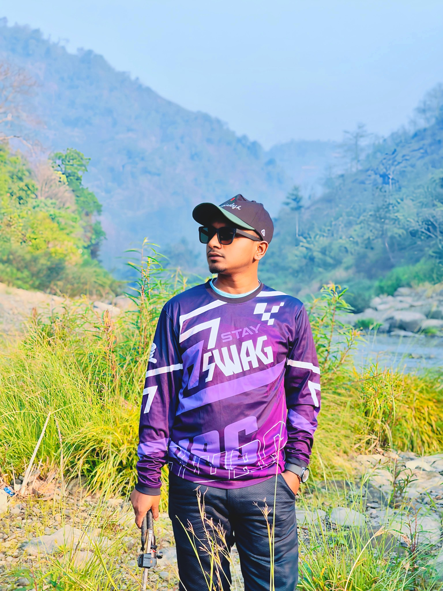

Cinematic aerial visual story • Auto plays muted
Drone • Travel • Nature • Visual Storytelling
EXPLORE MY WORKS →Hi, I’m MD NURUL ISLAM, creator of The Urban Kite. I capture Bangladesh from a new perspective through drone footage, aerial photography and cinematic visual storytelling.
From rivers and haors to green hills and quiet landscapes, I share the beauty and atmosphere of the places I explore.
“Exploring Bangladesh, one frame at a time.”
